Advisory
Strategic Advisory Board seat
A board or committee seat at a transformation that needs senior strategic counsel over years, not a project. Limited to a handful of organizations at a time.
A bridge between governments, builders and the futures they need to build.
Building digital and agentic states, livable cities of the future and innovation systems for what comes next. Advising governments, tech leaders and founders across the world. Turning bold ideas into systems.
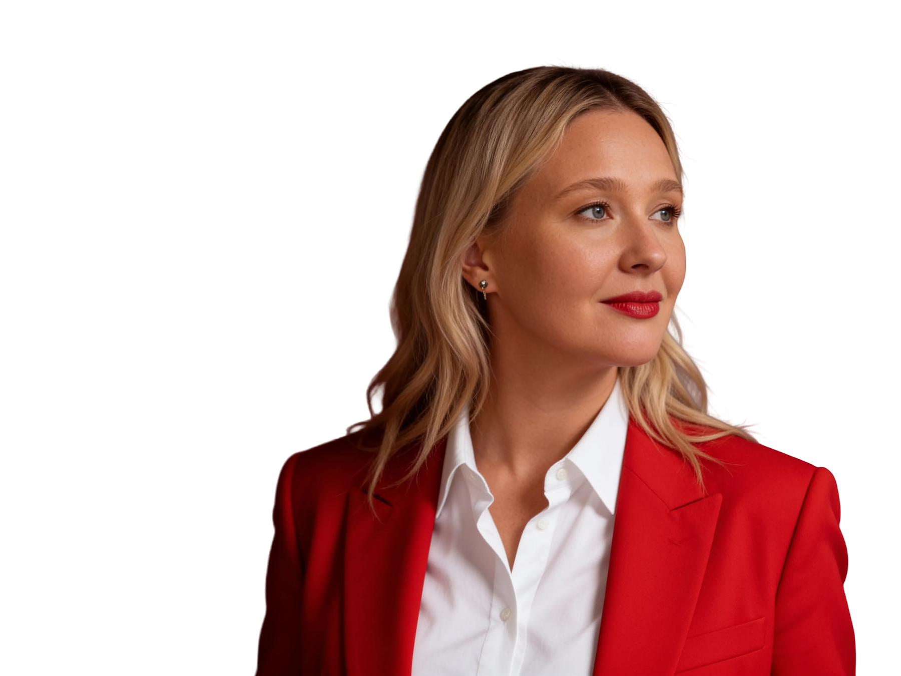
Governments, visionary companies and bold founders work with me when a transformation has to be irreversible.
For the work in progress: frontier government, agentic state, defense-tech, innovations and global partnerships.
Book a strategic conversation.
Former Deputy Minister of Digital Transformation of Ukraine (2019–2025). Co-architect of the Diia ecosystem (Diia.Education, Diia.Business, Diia.Hromada), WINWIN Ukraine’s Global Innovation Strategy, CDTO Campus and GGTC Kyiv. Led Ukraine’s position from Ministry of Digital Transformation in the Tallinn Mechanism, the international coalition supporting Ukraine’s cyber resilience. Led Ukraine’s EU accession negotiations on the Digital and Media chapter (Chapter 10), international cooperation and regional digital transformation. Former Strategic Advisor to the First Deputy Prime Minister of Ukraine.
Before government, a tech entrepreneur in marketing, education and media. Today, I work with Ukraine’s Ministries of Digital Transformation and Defense and with leaders shaping public-sector innovation worldwide, championing the brand of digital Ukraine globally, promoting partnership, innovation and investment between Ukraine and the world and building digital products.
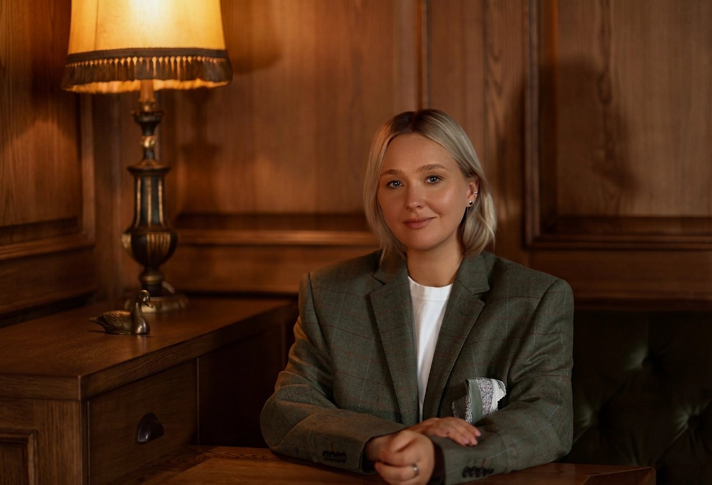
Designing digital and agentic states, creating innovation ecosystems and preparing institutions, businesses and citizens for the next decade.
Ministries, presidential offices and reform agencies designing the next decade of statecraft — the vision of a digital or agentic state, the digital products and innovation systems behind it, and the organizations that make it real.
I have done this from the inside, under pressure most teams will never face. I can compress your learning curve from years to months.
For global tech and investors entering Ukraine — and for Ukrainian companies going global.
Entering Ukraine. Committing capital, infrastructure or product in defense-tech, AI, dual-use, GovTech or talent? I help you design the partnership stacks — which moves create irreversible advantage versus burn cash on the wrong door.
Going global from Ukraine. Breaking into new markets or building partnerships beyond Ukraine? I help you design the route: which doors to open, which positioning works, which signals matter to the right buyers and capital.
Founders, bold thinkers and changemakers building at the intersection of technology, policy and purpose.
Projects that need to work at frontier conditions and scale far beyond them. I work with the people whose vision exceeds what their resources currently allow.
I also occasionally work with international organizations and foundations. Not sure whether we fit? Write to me — if I’m not the right partner, I’ll introduce you to someone who is.
hello@ionan.globalFour ways, depending on the depth and the stakes.
FORWARD with Valeriya Ionan. A global podcast where innovation meets diplomacy. A project for global investors, founders, policymakers and executives who want practical insight on entering Ukraine and helping Ukrainian companies scale globally.
FORWARD is open to partnerships with brands, companies and organizations working at the intersection of technology, governance and global investment. If you’re building something that matters and want to reach an audience of decision-makers, investors and policy leaders, let’s talk.
Become a guest or nominate someone for Season 1. Partner with the project.
hello@ionan.global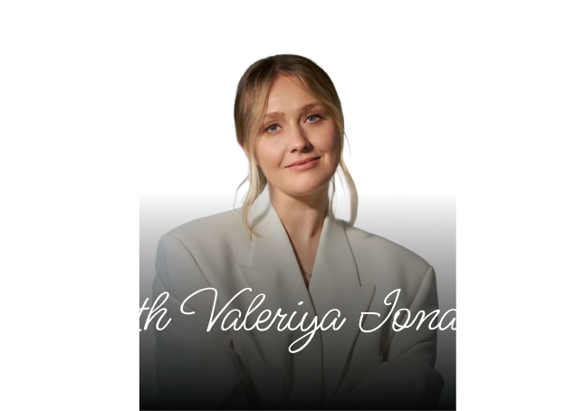
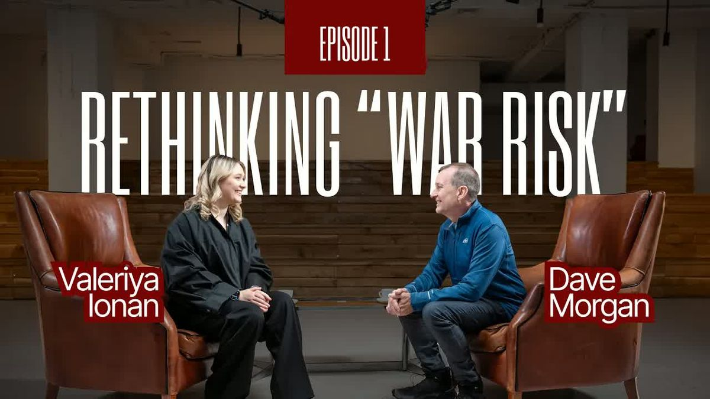
A conversation about how the world’s capital thinks about risk, how it misreads opportunity, and what it actually takes to commit to a market that is rewriting the rules in real time.
Dave Morgan | American entrepreneur and investor. Founder, Simulmedia.
What the world gets wrong about risk, branding and the state — and where the next generation of bold ideas is actually coming from. Andriy thinks Kyiv today feels like New York in the late 1980s. He might be right.
Andriy Fedoriv | Founder and CEO, Fedoriv Group and Fedoriv Agency.
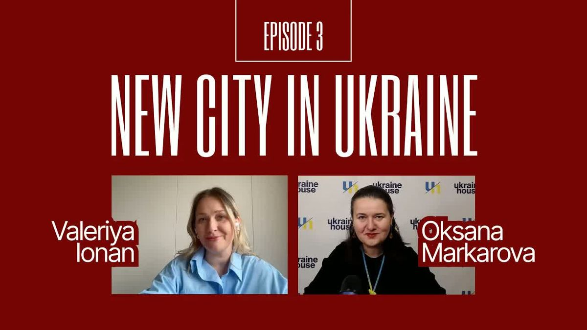
What it takes to build a country’s future while the war is still ongoing. Nove Misto — the first city in Ukraine designed from scratch: 100,000 residents, private funding, circular design and tech-first infrastructure.
Oksana Markarova
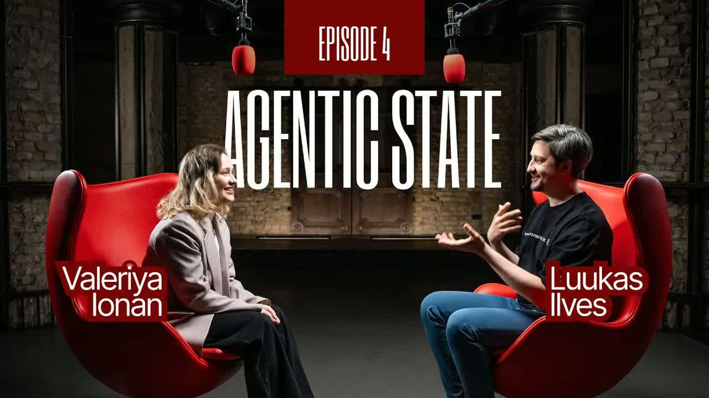
Why the shift to an agentic state is bigger than anything governments have done in twenty years — citizen agents across public services, task agents that transform procurement and fight corruption.
Luukas Ilves | Former CIO of Estonia. Advisor to Ukraine’s Minister of Digital Transformation.
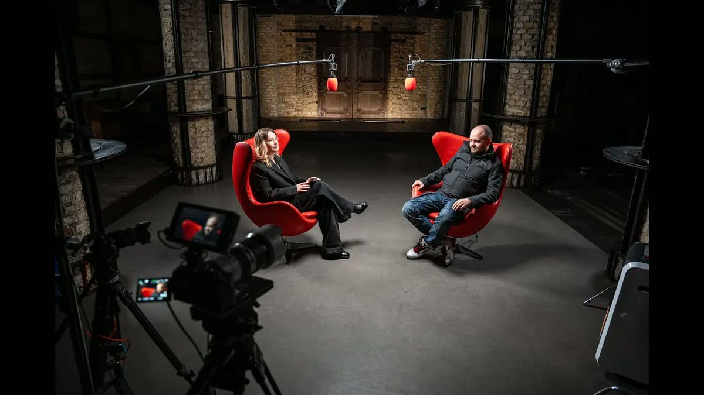
Building one of Ukraine’s fastest-scaling defense companies in the middle of a war. How war accelerates innovation, why Ukrainian UGVs are up to ten times more cost-effective, and what partners need to know now.
Taras Ostapchuk | Founder, Ratel — one of Ukraine’s largest unmanned ground vehicle producers.
What it actually takes to build an agentic state from inside a government that has already done more than most. Ukraine ranks fifth globally in digital public services — now moving toward AI agents that replace bureaucracy entirely.
Oleksandr Bornyakov | Acting Minister of Digital Transformation of Ukraine.
Six years of building one of the world’s most ambitious digital states from the inside left me with a kind of knowledge that doesn’t fit into conference talks or policy papers. At some point I realized the only honest container for it was a book.
The book is about Ukraine’s digital state — how we built it under the leadership of Mykhailo Fedorov, what it looks like to transform a government from the inside while the country is simultaneously running a pandemic response and then, without warning, a full-scale war, and what we learned that I believe no government in the world should have to learn the hard way.
Full InfoI co-build and back ideas designed to solve problems at the scale of systems, not just markets at the intersection of AI, GovTech, defense, education, and the future of how societies learn, govern, and decide.
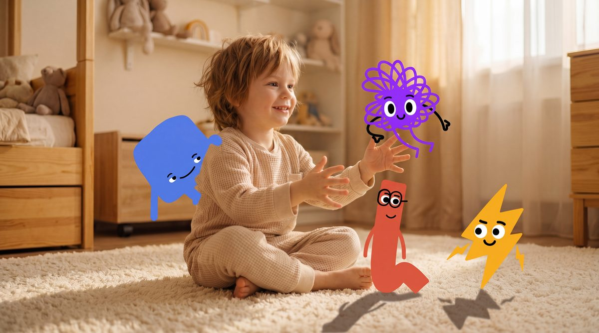
My long bet on what childhood looks like in an AI-native world. An educational universe for children aged 3–5, introducing digital literacy, AI, online safety and emotional intelligence through stories, characters and interactive experiences. What began as a book is becoming a broader edutainment ecosystem.
More informationI back founders building AI-native systems most institutions are not yet ready to imagine in GovTech, defense innovation, education and future-ready infrastructure.
If you’re building at one of these intersections or want to partner, co-invest — let’s talk.
hello@ionan.global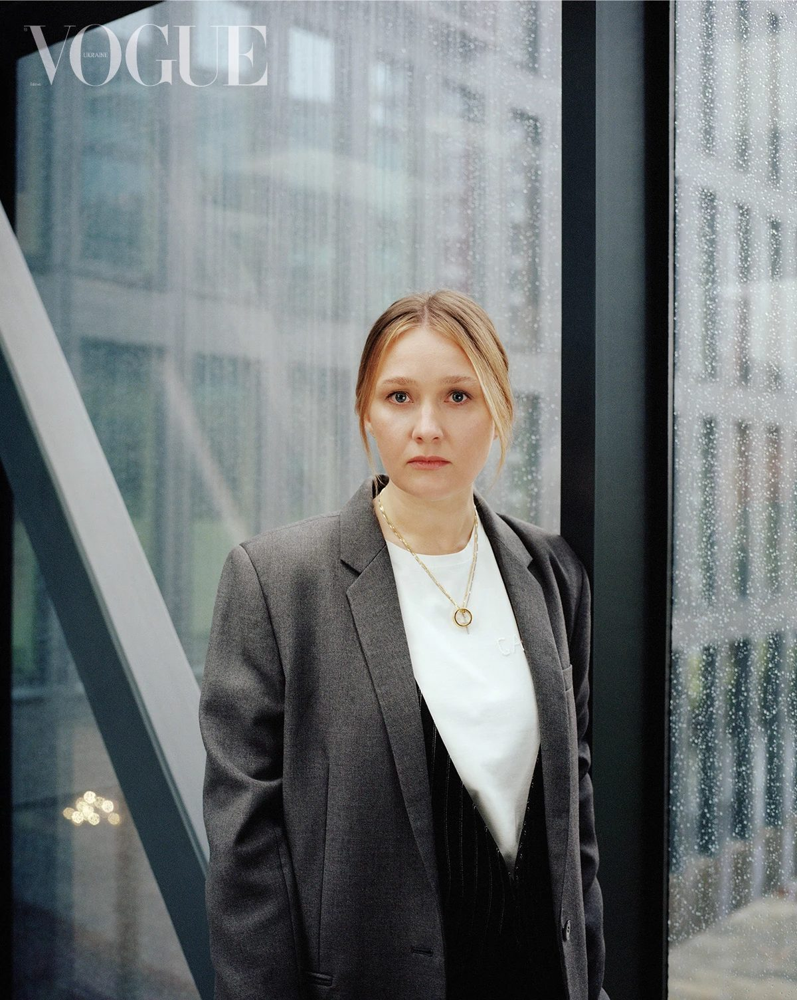
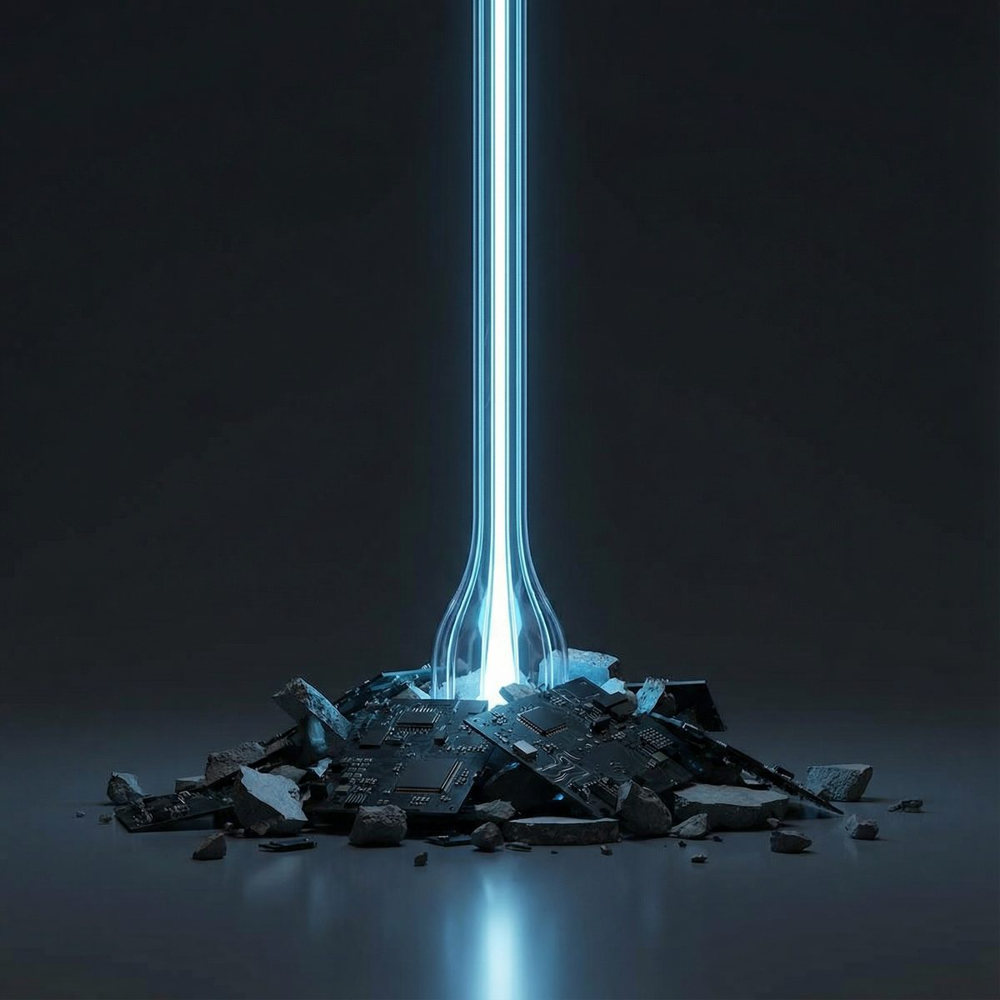
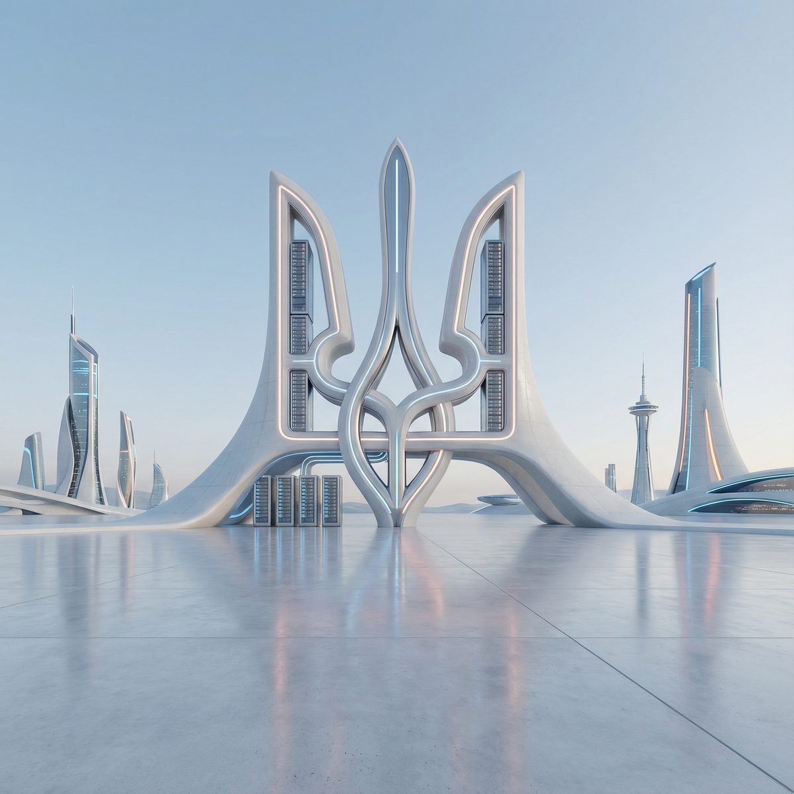
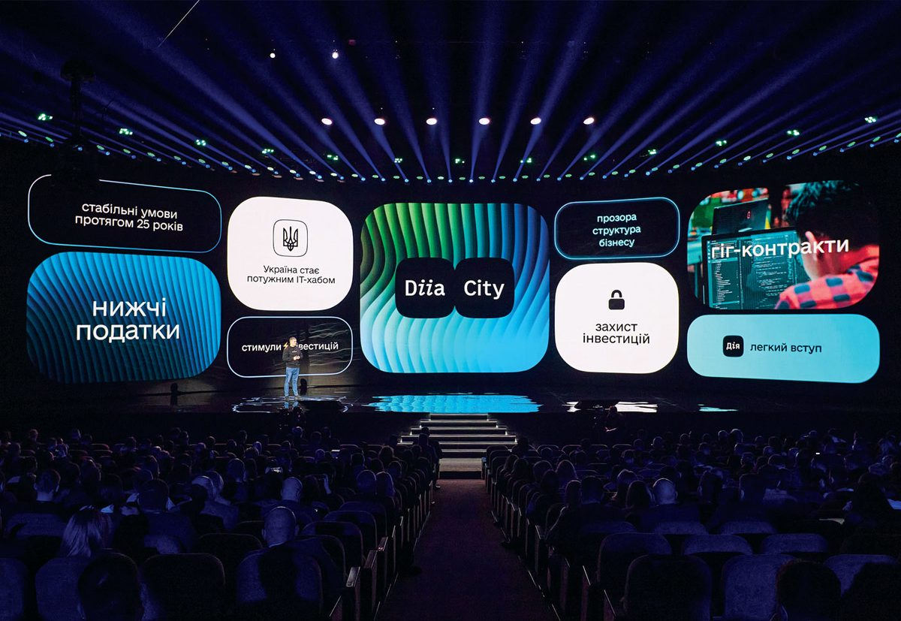
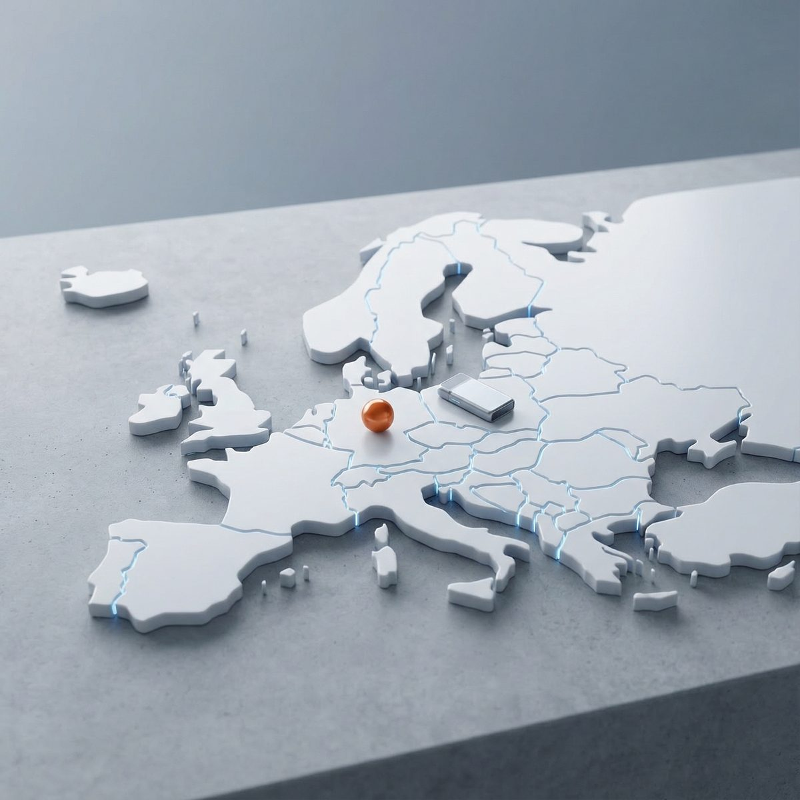
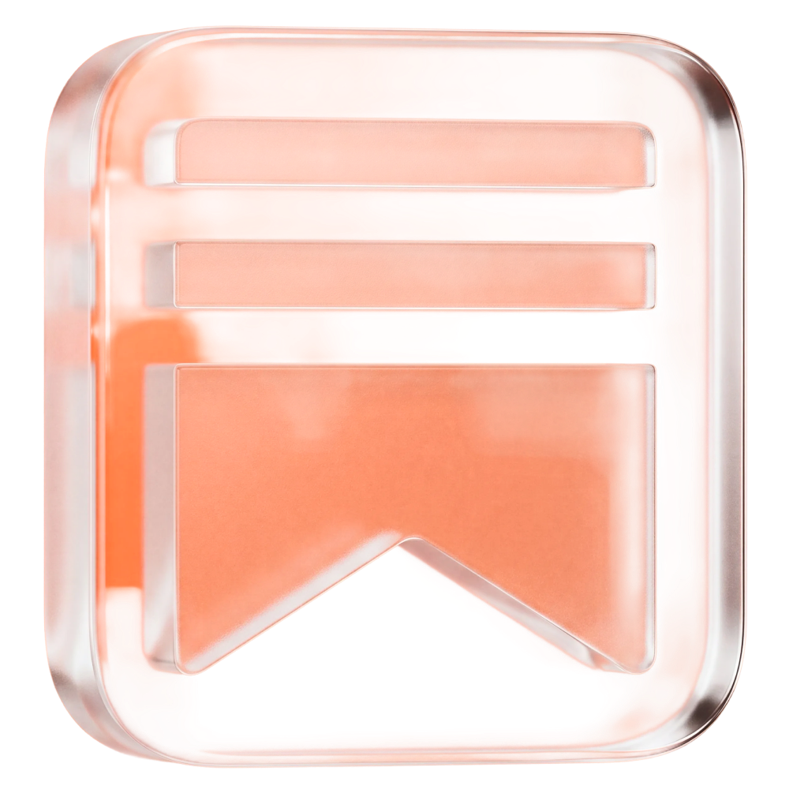
A space where I think out loud about the new era of digital states, AI, and the systems we are building for what comes next. Writing on frontier governance, agentic state, defense innovation, and the partnerships that will define the next decade. Notes from FORWARD episodes, dispatches from the field, and ideas that do not fit anywhere else.
Read on Substack